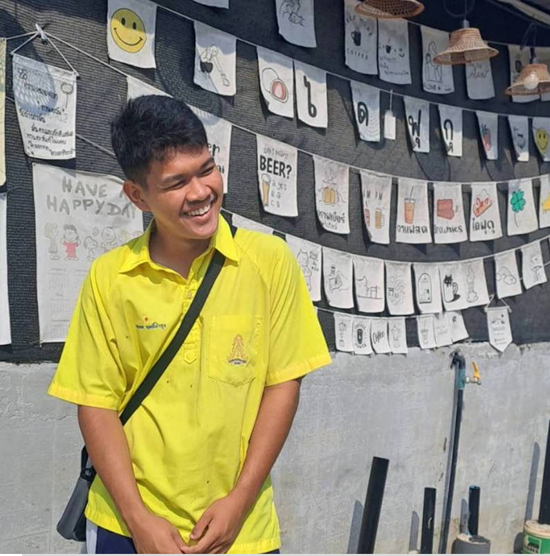

สวัสดีครับ ผมชื่อนาย นพดล ฤทธิ์บำรุง
เป็นนักเรียนชั้นมัธยมศึกษาปีที่ 6
จากโรงเรียน นวมินทราชูทิศ มัชฌิม
ผมเป็นคนที่ชอบอะไรที่เกี่ยวกับระบบคอมพิวเตอร์ มาตั้งแต่เด็ก
ก็ยิ่งรู้สึกว่า คนเราคิดระบบแบบนี้ขึ้นมาได้อย่างไร แล้วมันก็ทำให้ผมอยากเข้าไปเป็นคนที่สร้าง
หรือพัฒนาระบบแบบนั้นบ้าง
ผมเลยเริ่มสนใจในสายวิศวกรรม โดยเฉพาะสายคอม
เพราะผมรู้สึกว่ามันคือจุดเริ่มต้น
ของหลาย ๆ อย่างในโลกนี้ในตอนนี้เลยครับ